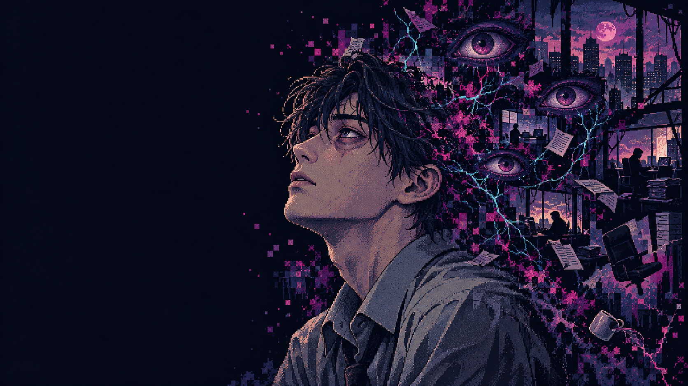

A PSYCHOLOGICAL EXPLORATION
BRAINDIVE
— 診 断 書 —
その声は、
あなたのものですか。
症例 01月曜の朝田辺 悠介 / 28歳
THE SESSION
混ざり合った声と記憶を、ほどいていく。
CASE 001 BRAIN DIVE / 待合室BRAIN DIVE / VISUAL NOVEL
探索した道は問診後も残ります
記憶を結びつける
記録された出来事、他者の言葉、そこから生まれた解釈を分けてみましょう。何度でも選び直せます。
言葉の出どころ
上司の声と、自分の中で生まれた解釈。それぞれ、どの記憶でしょう。
少し、話を聞いてみましょう
質問に正誤はありません。どの質問でも集中力が回復します。手がかりが必要なら、関係する場面について尋ねてください。
SESSION READY
MIND EXCAVATION
心を壊すのではなく、
知らなかった記憶のつながりを、見つけていく。
クリック / タップ 掘るO 観察C 記憶Q 問診
遊び方・アクセシビリティ
光の縁があるマスをクリック・タップして掘ります。通路に上下左右で隣接するマスだけ掘れます。隠れた通路は選んで「観察」。防衛を選ぶと必要な手がかりを確認できます。未発見のマスの内容は表示されません。
掘削・観察は集中力を1消費します。「問診」で回復でき、掘った通路や記憶は残ります。「記憶」で3枚を分類し、奥の残響で言葉の出どころを結びつけてください。カード閲覧・整理は無料です。矢印で対象選択、Enterで掘る、右クリック / Oで観察、Cで記憶、Qで問診、Escでポーズ、Rで探索を最初から。設定で音量・演出軽減を変更できます。進行セーブはありません。